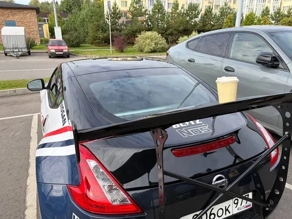
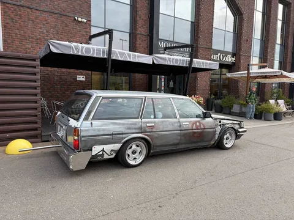
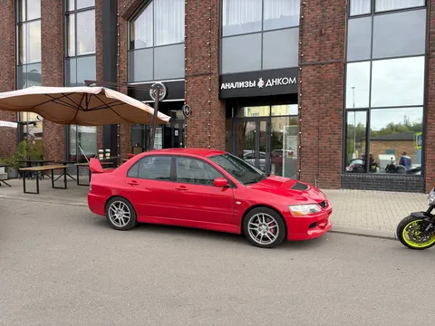
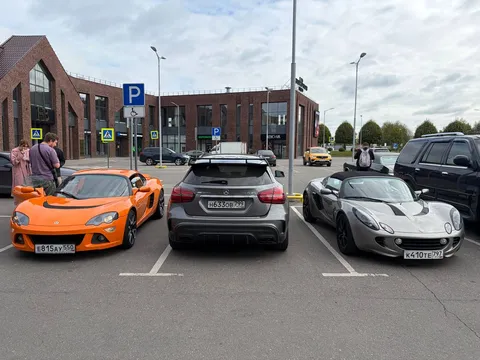
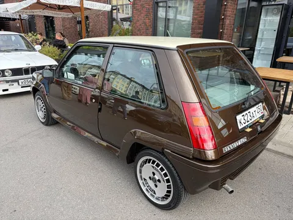
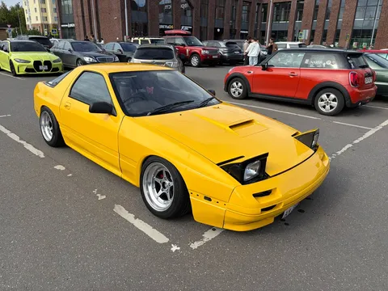
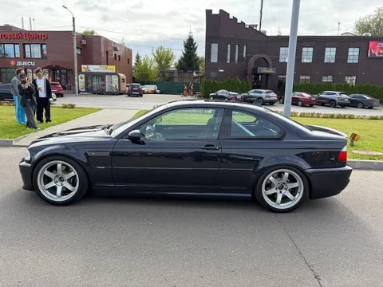
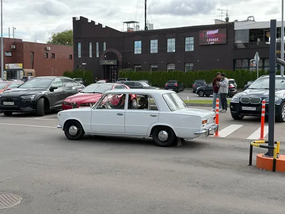
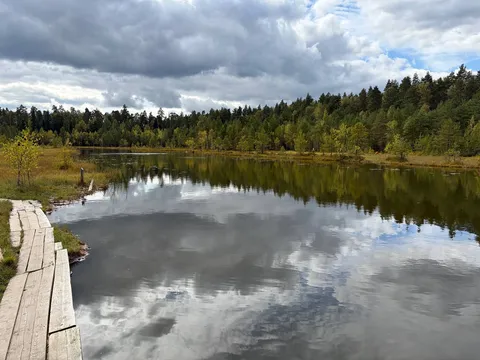
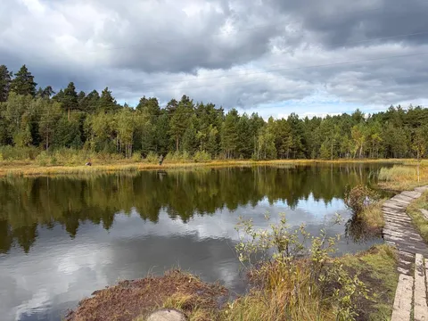

Про сходки vёshki cars&coffee я уже упоминал, а ведь зетка там еще не была. Нужно было протестировать спойлер на кофе-пригодность. Вердикт - не годится, угол атаки великоват, стаканчик сползает. А сама сходка, как обычно, топовая.
Полный диверсити по стилям и направлениям - классика бмв, босодзуку-марк, рыкса, копейка в идеале, эвик, мазерати, старая америка, порши, эмки, альфы, редкий рено 5 - все в сборе. Но самый сок, конечно - это два лотуса. Я даже в одном посидел. Технически, я туда поместился. Но все же лотус - для людей чуть компактней.
Ну а после VCNC организм экстренно затребовал шашлыков, в связи с чем случился телепорт на дачу, где заодно прогулялись до лесного озера. Красивое.









